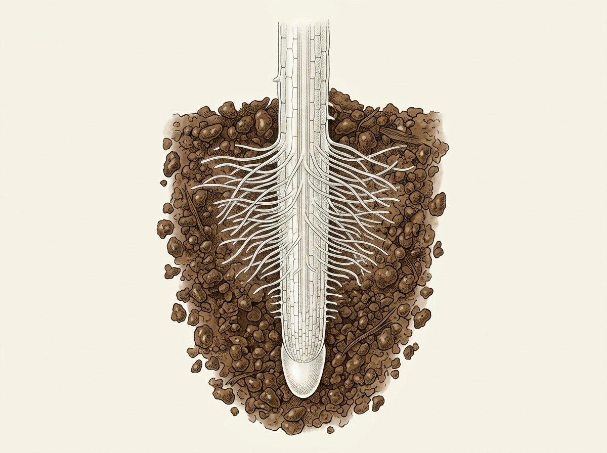

Rễ hấp thụ nước và ion khoáng như thế nào?
Sau khi tưới nước và bón phân, nước và các ion khoáng trong đất được cây hấp thụ qua rễ. Vậy bộ phận nào của rễ trực tiếp tiếp xúc và hấp thụ chúng?
HƯỚNG DẪN: Nhấn vào vùng lông hút trên rễ để quan sát. Vùng đã xem sẽ được làm nổi bật.
Cấu tạo hấp thụ của rễ
Rễ là cơ quan hấp thụ nước và ion khoáng chính của cây trên cạn. Bề mặt hấp thụ của rễ được phát triển đặc biệt nhờ hệ thống lông hút dày đặc ở vùng trưởng thành.

Nhấn vào vùng lông hút trên rễ để quan sát.